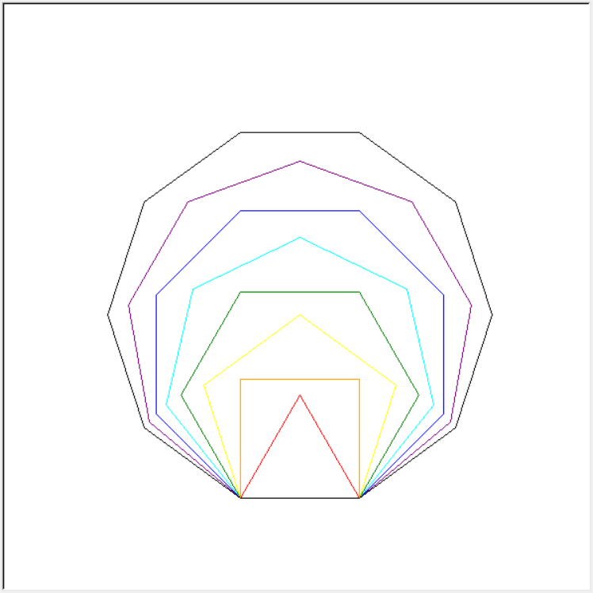
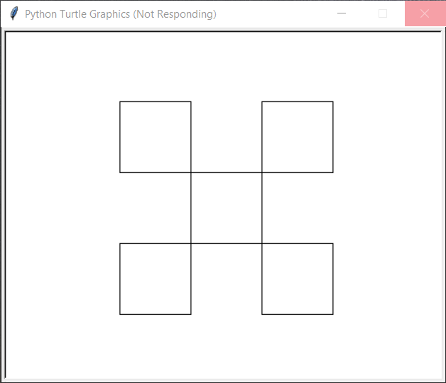

第06讲 绘制正多边形¶
Lecture06 Draw Regular Polygons
Problem 问题¶
Use the methods in the turtle module to draw step by step as follows: 使用turtle模块里的方法按步骤绘制：
Open a window(draw area) with both width and height 600; 打开宽高均为600的绘图窗口；
Reset to make the turtle at the center and heading right; 重置海龟使其位于绘图区中央并朝向右侧；
Lift up the pen; 抬起绘图笔；
Move turtle 200 right and 60 backward to its current position(center of the draw area), keep the turtle heading right; 将海龟移动至当前位置(绘图区中央）的右侧200和后方60的位置，保持海龟仍然朝向右侧；
Put down the pen, start to Draw; 放下绘图笔，准备绘图；
Use red color, repeat 3 times: move forward 120, turn 120 degrees to left; 使用红色画笔，重复3次: 向前移动120后向左转120度；
Use orange color, repeat 4 times: move forward 120, turn 90 degrees to left; 使用橙色画笔，重复4次: 向前移动120后向左转90度；
Use yellow color, repeat 5 times: move forward 120, turn 72 degrees to left; 使用黄色画笔，重复5次: 向前移动120后向左转72度；
Use green color, repeat 6 times: move forward 120, turn 60 degrees to left; 使用绿色画笔，重复6次: 向前移动120后向左转60度；
Use cyan color, repeat 7 times: move forward 120, turn 51.42857 degrees to left; 使用青色画笔，重复7次: 向前移动120后向左转51.42857度；
Use blue color, repeat 8 times: move forward 120, turn 45 degrees to left; 使用蓝色画笔，重复8次: 向前移动120后向左转45度；
Use purple color, repeat 9 times: move forward 120, turn 40 degrees to left; 使用紫色画笔，重复9次: 向前移动120后向左转40度；
Use black color, repeat 10 times: move forward 120, turn 36 degrees to left; 使用黑色画笔，重复10次: 向前移动120后向左转36度；
Hide turtle. 隐藏海龟图标。
Finally, you will be get a figure like the following:

The figures drawn in turn are: regular triangle, regular quadrilateral (square), regular pentagon, regular hexagon, regular heptagon, regular octagon, regular nonagon, and regular decagon. 依次绘制出来的图形分别为：正三角形、正四边形（正方形）、正五边形、正六边形、正七边形、正八边形、正九边形、和正十边形。
For each regular polygon, calculate the product of the number of sides and the angle of each turn. 对于每一个正多边形，计算边的数量和每一次转的角度的乘积。Take regular triangle as an example, the product is 3 * 120 = 360, where 3 is the number of sides(edges) and 120 is the degrees of each left turn。以正三角形为例，它的边数为3，每一次转120度，两者的乘积是3*120=360度。
Math Background 数学背景¶
多边形(Polygon)是由有限个线段首尾相连形成的封闭(closed)的平面图形。这些线段称为多边形的边(side or edge)；两条相邻的边相交共有的点成为顶点(vertex, vertices pl.)，
任何一个正三角形或边的数量大于3的正多边形的每一条边长(side)相等且每一个顶点(vertex)的内角相等；
对于任意一个（正）多边形，其内角和（sum of interior angles）
total_angle可以用下面的公式来计算：
total_angle = (num_side - 2) * 180 # 其中，`num_side`表示的是这个（正）多边形的边的数量。
正多边形，其外角和（sum of exterior angles）永远是360度。事实上对于任意一个凸（convex)多边形，即使不是正多边形，其外交和也总是360度。
Prerequisites 预备知识¶
[1]:
from random import randint
from turtle import setup, reset, bye, pu, pd, bk, fd, left, right, st, ht
# from turtle import penup, pendown, backward, forward, showturtle, hideturtle
from turtle import pencolor
setup(600, 400, 0, 0)
reset()
如何使用颜色绘图¶
[2]:
pencolor("red") #
fd(100)
彩虹色的名称分别为“red”,“orange”,“yellow”,“green”,“cyan”,“blue”,“purple”。
如何简化重复的代码¶
以正三角形为例
[3]:
reset()
pencolor("red")
side = 120
[4]:
# Shape1 Regular Triangle(3-gon)
degree = 120
fd(side)
left(degree)
fd(side)
left(degree)
fd(side)
left(degree)
上面的代码可以用下面的代码替换
[5]:
n_sides_drawn, n_sides_to_draw = 0, 3
degree = 120 # degrees to turn after each move
while n_sides_drawn < n_sides_to_draw:
fd(side)
left(degree)
n_sides_drawn = n_sides_drawn + 1
Exercise 1. use while loop to draw a regular hexagon(6-gon) 使用while循环化一个正六边形
[ ]:
Run the following code and describe how turtle is walking 运行下面的代码描述海龟的运行路线
[6]:
from turtle import left, fd, reset, ht, setup
setup(600, 600)
reset()
ht()
for i in range(50):
left(7.2)
fd(200)
left(180)
Solution 编程求解¶
[7]:
from random import randint
from turtle import setup, reset, bye, pu, pd, bk, fd, left, right, st, ht
# from turtle import penup, pendown, backward, forward, showturtle, hideturtle
from turtle import pencolor
[8]:
# prepare a draw area with length 600px and width 400 px
# 准备一个窗口，宽度600像素，高度400像素
setup(600, 600, 0, 0)
side = 120
half_side = side / 2
[9]:
# move to a specified place
reset() # 重置海龟（位置和朝向）
pu() # 抬起画笔
right(90) # 右转90度
fd(200) # 前进200
right(90) # 右转90度
fd(half_side) # 前进200
right(180) # 右转180度（调头，使海龟朝向右侧）
pd() # 放下画笔，准备绘图
Solution1 方案1¶
[10]:
# draw regular triangle
pencolor("red") # 使用红色画笔绘制
n_sides_drawn, n_sides_total = 0, 3 # 已经绘制的边的数量和一共需要绘制的边的数量
degree = 120 # 每一次移动之后需要转动的角度
while n_sides_drawn < n_sides_total: # 如果已经绘制的边的数量小于一共要绘制的边的数量，执行循环体
fd(side) # 前进一定长度
left(degree) # 左转一定角度
n_sides_drawn = n_sides_drawn + 1 # 完成上两步后，表明一条边已经绘制好，且已准备好绘制下一条边，这是退出循环的关键代码
[11]:
pencolor("orange")
n_sides_drawn, n_sides_total = 0, 4
degree = 360/n_sides_total
while n_sides_drawn < n_sides_total:
fd(side)
left(degree)
n_sides_drawn = n_sides_drawn + 1
[12]:
pencolor("yellow")
n_sides_drawn, n_sides_total = 0, 5
degree = 360/n_sides_total
while n_sides_drawn < n_sides_total:
fd(side)
left(degree)
n_sides_drawn = n_sides_drawn + 1
[13]:
pencolor("green")
n_sides_drawn, n_sides_total = 0, 6
degree = 360/n_sides_total
while n_sides_drawn < n_sides_total:
fd(side)
left(degree)
n_sides_drawn = n_sides_drawn + 1
[14]:
pencolor("cyan")
n_sides_drawn, n_sides_total = 0, 7
degree = 360/n_sides_total
while n_sides_drawn < n_sides_total:
fd(side)
left(degree)
n_sides_drawn = n_sides_drawn + 1
[15]:
pencolor("blue")
n_sides_drawn, n_sides_total = 0, 8
degree = 360/n_sides_total
while n_sides_drawn < n_sides_total:
fd(side)
left(degree)
n_sides_drawn = n_sides_drawn + 1
[16]:
pencolor("purple")
n_sides_drawn, n_sides_total = 0, 9
degree = 360/n_sides_total
while n_sides_drawn < n_sides_total:
fd(side)
left(degree)
n_sides_drawn = n_sides_drawn + 1
[17]:
pencolor("black")
n_sides_drawn, n_sides_total = 0, 10
degree = 360/n_sides_total
while n_sides_drawn < n_sides_total:
fd(side)
left(degree)
n_sides_drawn = n_sides_drawn + 1
[18]:
ht()
Solution2 方案2¶
[19]:
# move to a specified place
reset()
pu()
right(90)
fd(200)
right(90)
fd(half_side)
right(180)
pd()
[20]:
colors = ["red", "orange", "yellow", "green", "cyan", "blue", "purple", "black"]
n_edges = [3, 4, 5, 6, 7, 8, 9, 10]
n_polygon_drawn = 0
n_polygon_to_draw = len(n_edges) # 8 polygons to draw
while n_polygon_drawn < n_polygon_to_draw:
pencolor(colors[n_polygon_drawn])
degree = 360 / n_edges[n_polygon_drawn]
n_sides_drawn, n_sides_to_draw = 0, n_edges[n_polygon_drawn]
while n_sides_drawn < n_sides_to_draw:
fd(side)
left(degree)
n_sides_drawn = n_sides_drawn + 1
n_polygon_drawn += 1
ht()
Summary 知识点小结¶
while循环，语法格式，缩进；格式类似于if语句，有条件判断表达式，但没有对应的else部分；循环执行的代码部分称为循环体while循环内部也可以有while循环；循环语句必须在循环体内部设置一个终止（跳出）循环的条件，否则计算机一旦执行到循环体代码，就一直执行不会跳出；这种情况称为“死循环”；
CS Tips 计算机小知识¶
Red, green and blue are the three most basic colors, called the three primary colors of color. The colorful images seen on the computer monitor are formed by these three primary colors in different proportions. Each color point(pixel) on a display device is made up of physical component that can individually create red, green, and blue colors. 红色绿色蓝色是最基本的三种颜色，称为色彩的三原色。计算机显示器上看到的丰富多彩的颜色都是有这三种颜色按照不同的比例调和形成。显示器上的每一个色彩点都是由能单独形成红、绿、蓝颜色的设备组成。
Assignments 作业¶
仿照本讲示例，绘制边长为50的正二十边形。海龟起始点同本讲示例；颜色任选。
[21]:
reset()
pu()
right(90)
fd(200)
right(90)
fd(half_side)
right(180)
pd()
pencolor("red")
side, n_sides_to_draw = 50, 20
degree = 360/n_edges
n_sides_drawn = 0
degree = 360/n_sides_to_draw # degrees to turn after each move
while n_sides_drawn < n_sides_to_draw:
fd(side)
left(degree)
n_sides_drawn = n_sides_drawn + 1
---------------------------------------------------------------------------
TypeError Traceback (most recent call last)
<ipython-input-1-d04034e7f055> in <module>
9 pencolor("red")
10 side, n_sides_to_draw = 50, 20
---> 11 degree = 360/n_edges
12 n_sides_drawn = 0
13 degree = 360/n_sides_to_draw # degrees to turn after each move
TypeError: unsupported operand type(s) for /: 'int' and 'list'
仿照本讲示例，绘制边长为10的正一百边形。通过修改刚开始绘图时海龟的位置，使得绘制的正一百边形在绘图区域左右居中，颜色任选。
[22]:
side, n_sides_to_draw = 10, 100
reset()
pu()
right(90)
fd(200)
right(90)
fd(side/2)
right(180)
pd()
pencolor("red")
degree = 360/n_edges
n_sides_drawn = 0
degree = 360/n_sides_to_draw # degrees to turn after each move
while n_sides_drawn < n_sides_to_draw:
fd(side)
left(degree)
n_sides_drawn = n_sides_drawn + 1
---------------------------------------------------------------------------
TypeError Traceback (most recent call last)
<ipython-input-1-63c16e2d3223> in <module>
11 pencolor("red")
12
---> 13 degree = 360/n_edges
14 n_sides_drawn = 0
15 degree = 360/n_sides_to_draw # degrees to turn after each move
TypeError: unsupported operand type(s) for /: 'int' and 'list'
使用
while循环绘制下图。要求：所有的三个正方形都完全位于尺寸为600×400的绘图区域的中心；
三个正方形的边长依次为250，150，和50。
给每一行代码添加注释，解释其作用。

[ ]:
使用
turtle绘图库中已经学过的方法，在一个或多个代码单元格中编写任意行数的代码，绘制出按下面排列的一组(5个)正方形。具体要求：最中间的正方形位于画布（绘图区）的正中央；
每一个正方形的边长为80；
你的代码可以使用也可以不使用
while循环语句；给每一行代码添加注释，解释其作用。

[ ]:
使用
while循环，使用randint方法，编程完成下面两小题:生成100个范围在1,100（包括1和100）的随机数，计算这100个随机数的平均数，并计算该平均数与50的差值。打印这个平均数和得到的差。
生成10000个这样的随机数，计算平均值和平均值与50的差，打印出来。
[23]:
from random import randint
n = 100
i = 0
num, sum_num = 0, 0
while i < n:
num = randint(1, 100)
sum_num += num
i += 1
avg = sum_num / n
diff = avg - 50
print("avg: ", avg, "diff to 50 is:", diff)
avg: 50.43 diff to 50 is: 0.4299999999999997
[24]:
from random import randint
n = 10000
i = 0
num, sum_num = 0, 0
while i < n:
num = randint(1, 100)
sum_num += num
i += 1
avg = sum_num / n
diff = avg - 50
print("avg: ", avg, "diff to 50 is:", diff)
avg: 50.6685 diff to 50 is: 0.6685000000000016